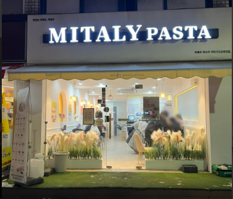
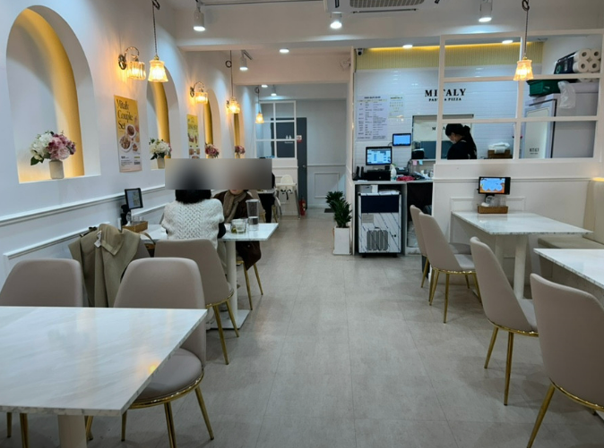
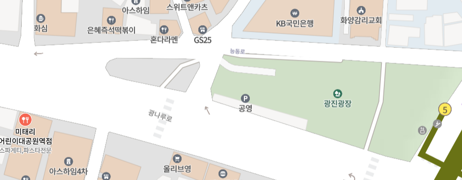
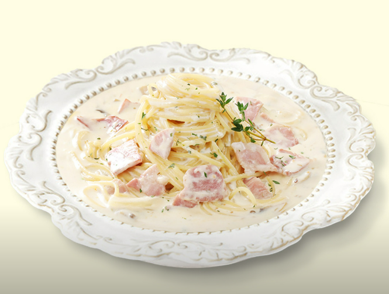
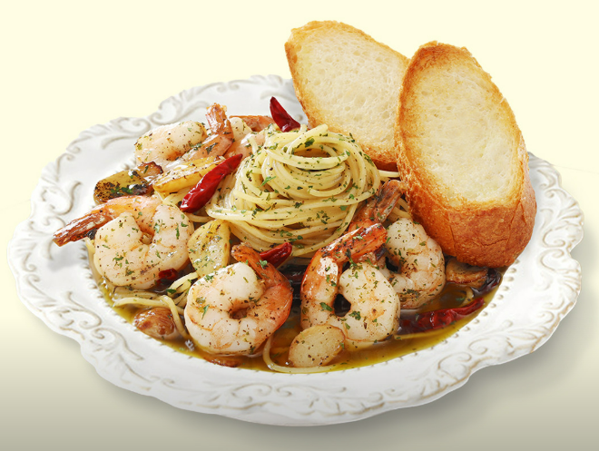
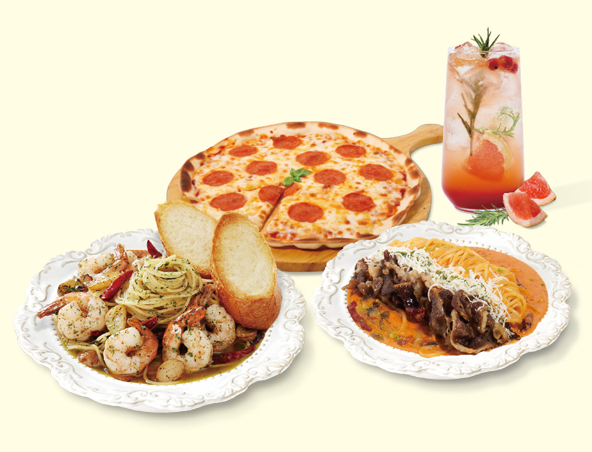

| 베이컨 까르보나라 | 감바스파스타 | 올데이세트 | |||
|---|---|---|---|---|---|
|

|
무난하게 먹기 좋아요 |

|
미태리 시그니처 맛있긴 한데 다 먹고 나면 김치찌개 땡겨요 ㅋㅋㅎ;; |

|
이것저것 먹고 싶을 때 친구랑 가서 드셔보세요^~^ |
| 맛 | 거리 | 청결 | 식곤증 | 재방문의사 | 한줄평 | |
|---|---|---|---|---|---|---|
| 팀원1 | 4 | 3 | 4 | 3 | 4 | 사람이 많지 않아 좋았고 맛도 있었습니다! |
| 팀원2 | 4 | 4 | 5 | 3 | 4 | 전체적으로 하얀 톤이라 청결해보입니다. 세트 구성 꽤괜 |
| 팀원3 | 5 | 4 | 5 | 5 | 5 | 부드러운 파스타의 맛에 반했습니다! |